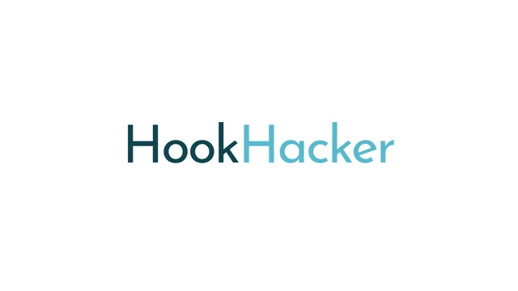

Handover · samurai-style.tokyo · Japanese site
Samurai Style site update: service list, video production and company pages
Three pages change. The service list goes down to four services. The video production page is rebuilt as a service page for clients in Japan: live-action video for any use (not only short videos), planned from an understanding of the client's business, then shot and edited, with the same structure as our other service pages, and restyled from a dark theme to the light look of the other pages. On the company page, the VALUES section changes its layout. In the contact form, the service options change to the same four services.
Each page below has a before / after screenshot and a numbered list of changes. Japanese text that appears on the site is shown in grey boxes. Please copy it with the Copy button instead of retyping it, so no character changes.
Ground rules
- Keep the existing components, fonts and spacing. Only the items in the change lists change.
- The Japanese language version (JA) only. Leave ID and EN as they are.
- Class names below are the Tailwind classes in the current build.
Page 1
Service list
https://samurai-style.tokyo/service


Changes
ReplaceCard 1: 「マーケティング支援」 becomes 「Strategy2Action」
TitleStrategy2ActionDescription事業理解に基づいて戦略を考え、実行まで伴走し、ダッシュボード作成による経営層・上長への可視化まで対応。Linkhttps://saussure1234.github.io/design-library/samurai-marke7/The link goes to another site, so open it in a new tab (
target="_blank" rel="noopener"). Keep the card image of the current マーケティング支援 card.No changeCard 2: 「HookHack」 stays as it is.
ReplaceCard 3: 「オフショア開発」 becomes 「HookHacker」 (LP and website production)
TitleHookHackerDescription自社開発AIツール「HookHack」×インドネシアオフショアチーム×日本人ディレクターでLP・サイト制作を代行。Linkhttps://www.hook-hack.com/hookhackerImage
New image, 1280 × 720 px, white background, HookHacker logo 700 px wide in the centre. Logo file:
https://www.hook-hack.com/hookhacker-logo.pngOpen in a new tab, same as card 1.
No changeCard 4: 「動画制作」 keeps its text and link. It moves to the 4th position.
RemoveRemove two cards from the list: 「新規事業開発PMO」 and 「海外進出支援PMO」.
Final order: Strategy2Action, HookHack, HookHacker, 動画制作 (2 × 2 on desktop, 1 column on mobile).
Not part of this change
- Do not delete the old pages (/marketing-support, /indonesia-offshore, /newbusiness-pmo). Only their cards leave this list.
- The service cards on the TOP page stay as they are for now. The contact form options change: see page 4.
Page 2
Video production
https://samurai-style.tokyo/tiktok-production


Content changes
The page is no longer about short videos only. It sells live-action video production for any use, planned from an understanding of the client's business. Final order of the page: Hero, Problem (new), About, Menu (new), Strength, Work Flow, Price (new), Member, Contact.
ReplacePage title (
<title>and og:title)NowTikTok・ショート動画制作 | サムライスタイル株式会社New動画制作（企画・撮影・編集） | サムライスタイル株式会社ReplaceHero: headline and sub copy. The background video stays.
Headline nowショート動画で伝わる。ブランドを加速させるコンテンツ戦略。Headline new (HTML)事業理解から、<br>伝わる動画をつくる。Two lines on all screen sizes. Remove the old
<br class="hidden max-md:inline">.Sub copy now視聴者の心を動かすオリジナルコンテンツを制作Sub copy new会社紹介・サービス紹介・採用・SNSなどの実写動画を、事業理解に基づく企画から撮影・編集までワンストップで制作します。AddHero: add the 「お問い合わせ」 button under the sub copy. Use the same button component and link as the one in Work Flow, and keep it white here because it sits on the video.
New sectionProblem: add a new section between the hero and About. Build it with the About section component (small label, heading, white chips without icons), with the layout changes in item 7.
LabelProblemHeadingこんなお悩みはありませんかChip 1企画から撮影・編集まで、まとめて任せられる制作先がないChip 2撮影はできても、事業や顧客に合った企画にならないChip 3動画で何をどう伝えればよいか、社内で決めきれていないNumbers ❶ ❷ ❸: before the text of each chip, add
<span class="font-noto shrink-0 text-[26px] leading-none text-[#222222] max-sm:text-[22px]">❶</span>(❷ and ❸ for chips 2 and 3). Desktop: number above the text. Mobile: number left of the text (the chip is already a row on mobile).Illustration to the right of the heading. Heading column: replace
flex-col items-startwithflex-row items-end justify-between gap-[40px] max-md:flex-col max-md:items-start. Image classes:w-[300px] max-w-[40%] h-auto max-md:w-[240px] max-md:max-w-full max-md:self-center.File: video-problem.webp (transparent background). Alt text:
動画づくりに悩む会社員2人のイラストReplaceAbout: heading and paragraph (whole text)
Heading nowショート動画専門チームが、ブランドの成長をサポートHeading new (HTML)事業の「伝えたいこと」を、<br>動画のかたちにText now私たちは、マーケティングリサーチ、コンテンツ制作、コンサルティングを通じて、ショート動画でのブランド成功を支援します。（whole paragraph）Text new私たちは、事業理解に基づく企画から、撮影・編集までを一貫して手がける動画制作チームです。顧客・競合・自社の視点で伝えるべきことを整理し、専任チームと自社スタジオで、ブランドの世界観に沿った実写動画を制作します。RemoveAbout: remove the white chip 「マイクロインフルエンサー」. Two chips remain: 「クリエイティブスタジオ」 and 「専門的な市場調査」.
LayoutAbout: text and chips on the left, illustration on the right.
Move the 2 chips into the text column, under the paragraph, side by side. Text column
w-[60%]becomesw-[55%]. Chip wrapper:grid w-full grid-cols-2 gap-[16px] max-sm:grid-cols-1 max-sm:gap-[12px]. The right columnflex w-[40%] items-center justify-center max-md:w-fullholds the illustration, imageh-auto w-full max-w-[360px] max-md:max-w-[300px].New sectionMenu: add a new section between About and Strength. Same component as Problem, plus a one-line paragraph under the heading (same style as the About paragraph) and six chips.
LabelMenuHeading制作できる動画Text実写の動画を、用途に合わせて企画・制作します。Chip 1会社紹介動画Chip 2サービス紹介動画Chip 3採用動画Chip 4 (HTML)SNS動画<wbr>（ショート動画）Chip 5Web広告動画Chip 6 (HTML)展示会・<wbr>イベント動画On the chip text add
break-keep max-sm:text-center, so 「SNS動画」 and 「展示会・」 break only at the<wbr>.Layout for Problem and Menu only (About keeps its current layout):
Heading columnw-full flex-col items-start justify-center max-md:w-fullReplaces
w-[60%]anditems-center, so the heading sits on the left like About.Chip wrapper, Problemgrid w-full grid-cols-3 gap-[20px] max-md:grid-cols-2 max-sm:grid-cols-1 max-sm:gap-[12px]Chip wrapper, Menugrid w-full grid-cols-3 gap-[20px] max-md:grid-cols-2 max-sm:grid-cols-2 max-sm:gap-[12px]Replaces
flex w-[40%] flex-col items-center justify-center gap-[30px] max-md:w-full max-md:gap-[15px]. Desktop: 3 chips per row. Mobile: Problem 1 per row, Menu 2 per row.ReplaceStrength: section heading
NowTikTokマーケティングを成功に導く3つの強みNew動画制作を成功に導く3つの強みRemoveStrength: remove the whole block 「低投資で高品質なインプレッションを獲得」 (heading, text and the Indonesian-language research screenshot under it).
ReplaceStrength block 「効果的なマーケティングの本質」: new heading and text, remove its image (the micro-influencer database screenshot), and move it to the first position. Keep its laptop icon.
Heading事業理解に基づく企画Text顧客・競合・自社の3つの視点で事業を整理し、誰に何を伝える動画かを決めてから企画します。戦略から実行まで伴走する「Strategy2Action」の進め方を、動画の企画にも生かしています。Illustration in the image column of this block (where the removed screenshot was). Wrapper:
flex w-1/2 items-center justify-center max-md:w-full max-md:max-w-[450px], imageh-auto w-full max-w-[340px] max-sm:max-w-[280px](smaller than the product photos).File: video-plan.webp (transparent background). Alt text:
動画の企画会議で3つの視点を説明するイラストReplaceStrength block 「強力なブランドイメージの構築」: new heading and text. It becomes the second block.
Heading企画から撮影・編集まで自社で一貫Text社内クリエイティブチームが、企画から撮影・編集・仕上げまで一貫して対応します。ブランドの世界観を反映した、質の高い実写動画を制作します。Keep the two product photos in this block. Do not remove or replace them.
AddStrength: add a third block at the end. Same component and spacing as the other blocks, with the camera icon.
Heading国内への出張撮影に対応Text撮影は、ご指定の場所に出張して行います。最短翌日から対応します（交通費・宿泊費は実費）。Illustration in the image column of this block, same wrapper and classes as the 「事業理解に基づく企画」 block.
ReplaceWork Flow: heading and paragraph (the free trial is no longer offered)
Heading now無料トライアルで、ブランド成長を体験Heading new企画から撮影・編集まで、一貫して制作Text newヒアリングと企画から、撮影・編集、納品まで、社内チームが一貫して対応します。ReplaceWork Flow: four steps. Remove the step 「マイクロインフルエンサー」.
1 titleヒアリング・企画1 text事業や顧客、動画の用途をお伺いし、伝える内容と構成を企画します。2 title撮影2 textご指定の場所に出張して撮影します。最短翌日から対応します。3 title編集3 text撮影した素材を、用途に合った長さと形式に編集します。4 title納品4 textご確認いただいた内容を反映し、完成した動画を納品します。New sectionPrice: add a new section between Work Flow and Member. Build it with the Work Flow section component without the steps (label, heading, paragraph, 「お問い合わせ」 button).
LabelPriceHeading費用・納期Text動画の内容や本数、撮影の有無をお伺いしたうえで、ご相談によりお見積りします。撮影の出張にかかる交通費・宿泊費は実費です。ReplaceMember: heading, paragraph, and the role and profile of 林 壮
Heading nowグローバルに活躍する専門チームHeading new動画制作を担うメンバーText new事業づくりとマーケティングの経験を持つ代表と、映像ディレクターの経験を持つメンバーが、企画から撮影・編集まで担当します。林 壮: role映像ディレクター林 壮: profile東京生まれ、イギリス・シンガポール育ち。 映像ディレクターの経験を生かし、動画制作の企画・撮影・編集を担当。Keep the line break after 「育ち。」. 橋本 圭司 stays as it is.
RemoveMember: remove the 3rd card 「フルスタックエンジニア / Satrio Buwono」 and the scroll arrow under the cards. Card row:
justify-startbecomesjustify-center, so the 2 cards sit in the centre.


Style changes: section colours
The page alternates light grey, white and dark sections. Dark sections keep the current dark classes; grey and white sections use the light values below.
| Section | Background | Text |
|---|---|---|
| Hero | video (no change) | white (no change) |
| Problem | bg-[#f5f5f5] | light values |
| About | bg-white | light values |
| Menu | bg-coal-dark (current dark) | current dark values: text-white, label text-[#c9d9f9], paragraph text-[#c8c8c8]. Chips stay white. |
| Strength | bg-white | light values |
| Work Flow | bg-[#f5f5f5] | light values |
| Price | bg-coal-dark (current dark) | current dark values. The 「お問い合わせ」 button stays white. |
| Member | bg-white | light values |
Light values (grey and white sections):
| Where | Now | New |
|---|---|---|
| Headings, body text and icons that are white | text-white | text-[#222222] |
| Small labels (Problem, About, Strength, Work Flow, Member) | text-[#c9d9f9] | text-[#aaaaaa] |
| Step descriptions in Work Flow | text-[#c8c8c8] | text-[#333] |
| Problem and About: the white chips | rounded-[12px] bg-white | add border border-[#dddddd] |
| Work Flow: number circles | bg-white, number in dark text | bg-[#222222], number text-white |
| 「お問い合わせ」 button in Work Flow | bg-white, text and arrow #333 | bg-black, text and arrow text-white |
Page 3
Company: VALUES section
https://samurai-style.tokyo/company


Changes
Only the section #values changes. The five texts stay exactly the same. FUN (PLAY) is the main value, so it gets its own wide card on the first row. The heading 「VALUES」 above is centred, so the card texts are centred too.
LayoutThe wrapper of the five cards becomes a 2-column grid.
Nowflex flex-row flex-wrap items-center justify-centerNewgrid grid-cols-2 max-md:grid-cols-1Keep
gap-[40px] max-md:gap-[20px] max-sm:gap-[16px]. Row 1: FUN (PLAY) alone, full width. Row 2: Free | Flat. Row 3: Open | Optimization. Under 768px: one column in the same order.StyleAll five cards: centre the content.
Nowitems-start justify-betweenNewitems-center justify-center text-centerStyleFUN (PLAY) card only: span both columns and make it larger.
Cardcol-span-2 max-md:col-span-1 py-[80px]Replace
py-[60px]withpy-[80px]. Keepmax-md:p-[24px], so mobile padding does not change.Titletext-[48px] max-md:text-[32px]Replaces
text-[36px] max-md:text-[28px]on 「FUN (PLAY)」. The other four titles stay at 36px / 28px.Line breaksThe Japanese line in each card: add
text-balance break-keepand replace the text with the HTML below. The words are the same; only<wbr>break points are added, so lines break between phrases and not in the middle of a word.FUN (PLAY)世界で1番<wbr>楽しそうに働く<wbr>チームを目指すFree各自の責任感の下、<wbr>場所や時間に捉われず<wbr>自由に裁量を持って働くFlat年齢や役職などの<wbr>上下関係なく接するOpenチーム内では本音で向き合い、<wbr>人格は否定しないOptimization全体最適視点で<wbr>判断するbreak-keepstops breaks inside words, so the<wbr>points are required. Without them a long line can run out of the card on mobile.
Page 4
Contact form: service options
https://samurai-style.tokyo/#contact
The radio buttons under 「お問い合わせ内容（必須）」 change to match the four services in the new service list. The form is on the TOP page only.
Changes
AddNew first option: Strategy2Action
Label and valueサービスについて（Strategy2Action）No change「サービスについて（HOOKHACK）」 stays as it is, in 2nd position.
AddNew 3rd option: HookHacker
Label and valueサービスについて（HookHacker）Replace「サービスについて（ショート動画制作支援）」 becomes 「サービスについて（動画制作）」, in 4th position.
Label and valueサービスについて（動画制作）RemoveRemove three options: 「サービスについて（オフショア開発）」, 「サービスについて（新規事業開発PMO）」 and 「サービスについて（海外進出支援PMO）」.
No change「取材・メディア関係」 and 「その他のお問い合わせ」 stay as they are, at the end.
Final order (6 options): サービスについて（Strategy2Action）, サービスについて（HOOKHACK）, サービスについて（HookHacker）, サービスについて（動画制作）, 取材・メディア関係, その他のお問い合わせ.
Please check
- Each radio button sends its label text as
value(name="topic"). Set the same new text invalue. - If anything after the form uses these values (notification email, Slack, spreadsheet, filters), update it to the new texts too.